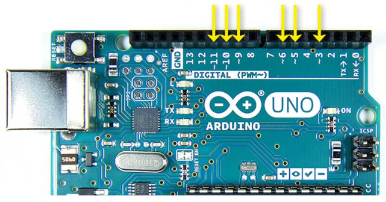
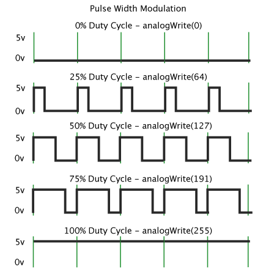

Elektriskās ķēdes bez programmēšanas
Divi iesildīšanās vingrinājumi, kas Arduino uztver kā strāvas avotu - neko neprogrammē, bet ieslēdz ķēdi starp GND (jeb 0V) un 5V
Rakstīšana uz seriālā porta
Lai programmētājs redzētu, kādas vērtības rodas uz Arduino kontaktiem, tās var drukāt uz Arduino IDE ekrāna vai attēlot kā grafiku.
Mirkšķināšana
Vienkāršākā Arduino programmaa "Blink" - ik pēc regulāra intervāla ieslēdz/izslēdz 13.kontaktu. Ar to var mirkšķināt gan LED diodi uz plates (kura tieši saslēgta ar 13.kontaktu), gan arī ārēju diodi.
Lampiņu ieslēgšana
LED lampiņas var ieslēgt/izslēgt vai nu ar pogu vai arī ar potenciometru (ja tas pieņem noteiktu vērtību).
Servomotors
Šis ir testa piemērs, kurš motoru griež vispirms uz vienu, tad uz otru pusi. Konkrētāki piemēri servomotora izmantošanai būs turpmākajos vingrinājumos.
Pulsa platuma modulācija
Šajā piemērā potenciometra vērtību nolasa uz analogā kontakta A0 ar nolūku ģenerēt citu signālu uz digitālā kontakta 9, kas iespaido LED lampiņas spīdēšanu. Cerams, tā mainās vienmērīgāk nekā tad, ja spriegumu maina tieši ar potenciometru.
7 posmu LED displejs
Elektroniskas ierīces bieži rāda ugunīgus cipariņus. Vienkāršs displeja veids ir 7 posmu LED displejs, kurā no 7 gaismas diodēm izveidots "astoņnieks", kurā ieslēdzot vai izslēdzot dažus posmus var uzzīmēt visus ciparus no 0 līdz 9. Mūsu komplektā ir LED displeji, kuriem ir "kopīgais katods" (*common cathode*), t.i. vidējās kājiņas augšā un apakšā pārstāv "zemi" jeb katodu jeb **GND** kontaktu. Visas pārējās kājiņas pieslēdzas katram no 7 posmiņiem (ir vēl arī astotais posmiņš, kas ir "DP" - "decimālais punkts"). Vienam LED cipariņam pietiek ar vienu rezistoru, kuru loģiski uzlikt uz katoda, jo visa strāva plūst caur šo katodu.
Multipleksēšana
Iepriekšējā piemērā redzējām, ka viens LED cipariņš aizņem 8+1=9 kontaktus no Arduino plates. Divu cipariņu attēlošana prasītu jau 9+9 = 18 kontaktus. Bet Arduino platei nemaz nav tik daudz kontaktu. Lai zīmētu skaitlīšus uz diviem LED cipariņiem, jāizmanto triks, ko sauc par "multipleksēšanu". T.i. Arduino kontrolieris ļoti ātri pārslēdzas starp abiem cipariņiem - reizēm viņš zīmē vienu cipariņu, reizēm - otru. Pārslēgšanās starplaikos cilvēks nepamana, ka attiecīgais cipariņš tiek atslēgts, jo katram cipariņam ļoti bieži sūta atjauninājumus.
Pulsa platuma modulēšana (PWM - Pulse Width Modulation)

Arduino plate var nolasīt "analogu" signālu (piemēram, potenciometra vērtību - jebkuru skaitli intervālā $[0;1023]$). Diemžēl, Arduino plate nevar izvadīt analogu signālu; vienīgā iespēja ir ļoti ātri pārslēgt starp spriegumiem HIGH (5 volti) un LOW (0 volti). Uz plates neeksistē nekāds "digitālais-uz-analogo" pārveidotājs. Tie kontakti, kuri spēj ļoti strauji raustīt spriegumu, ir 3., 5., 6., 9., 10., 11. kontakts. (Tie ir apzīmēti ar mazu vilnīti uz Arduino plates.) Daudzām elektriskām iekārtām (diodēm, elektromotoriem) patīk saņemt šādu raustīgu spriegumu. Diode var sākt spīdēt mazāk intensīvi. Motors var saņemt leņķi, par kuru pagriezties.
Šis attēls parāda, kā izskatās PWM izvade (kā diskrēts kontakts, kuram ir tikai divi stāvokļi HIGH un LOW var izvadīt analogu signālu (teiksim, jebkuru skaitli starp 0 un 255):

Motora grozīšana
Panākt, lai servo motors dara to, ko vajag, nav ļoti vienkārši. Tas saprot komandas, ko padod no kāds no PWM kontaktiem (3., 5., 6., 9., 10., 11. kontakts jeb "pin"). Atļautās komandas ir veseli skaitļi intervālā $[0;180]$. "Neitrālais" stāvoklis ir $90$, visi leņķi, kas mazāki par $90$ ir motors pagriezies par kaut kādu leņķi pretēji pulksteņa rādītājiem; leņķi, kas lielāki par $90$ ir motors pagriezies par leņķi pulksteņa rādītāju virzienā. Lai labāk saprastu, kas tur notiek, piedāvājam uzdevumu, kurš groza servo motoru (līdzīgi kā robotu mašīnītes stūri) par 10 grādiem uz vienu un otru pusi. Un attēlo ar diodes gaismiņu, kurš no griezieniem pašlaik notiek.